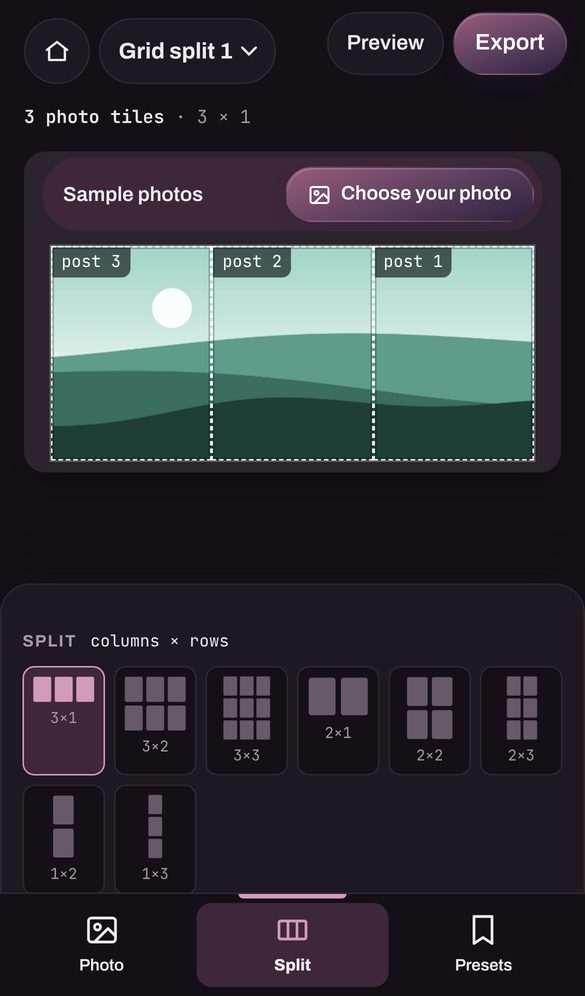
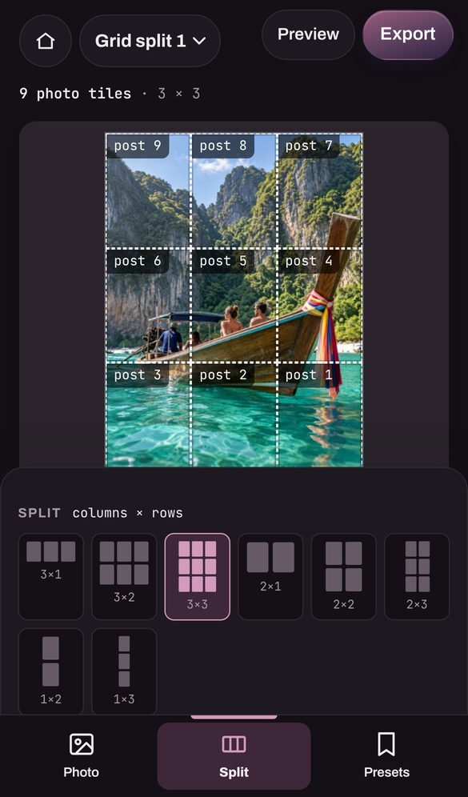
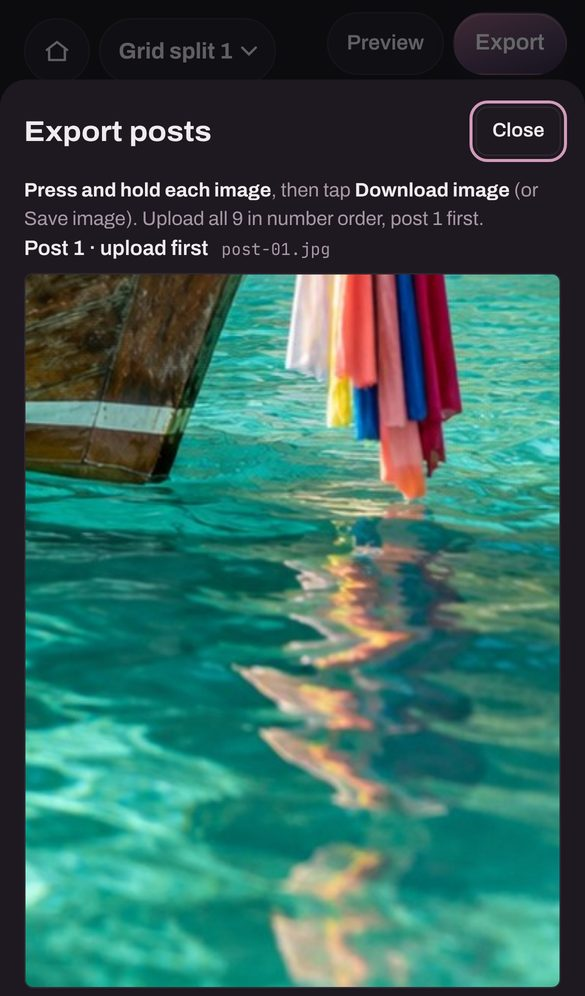

Guide · Grid split
How to split one photo across your Instagram grid
One photo from Thailand, cut into nine posts that join up into a single big picture on your profile. Here's every step, with the real screens.
The nine tiles in upload order. Post 1 is the bottom-right corner, so it goes up first.
01
Choose your photo
I opened Swipefold, chose Grid split and tapped Choose your photo. I picked the longtail boat under the cliffs at Railay: big shapes and lots of colour, so it still reads when it's cut into pieces.
Pick a photo with one clear subject and simple space around it. Busy photos get lost once they're split.

02
Pick the split, then frame it
Under Split I chose 3 × 3: nine posts, three full rows of my profile. A tall photo suits 3 × 3. For a wide one, try 3 × 1 or 3 × 2.
Then I dragged the photo so the boat sat across the middle tiles. Zoom brings it closer if you want less sky or sea. The dashed lines show every cut, and the numbers show the order to post in.

03
Check it on your profile
Preview shows the tiles side by side, the way they will sit on your profile, with Instagram's thin gaps between them.
Each tile is 1080 × 1440 px (3:4), the shape of a profile grid tile today, so nothing gets cropped and the pieces join up.

04
Export, then post in order
I tapped Export, and Swipefold saved nine images to my photos, named post-01 to post-09.
Each tile is its own post, not a carousel. Post 1 goes up first, then 2, then 3, all the way to 9. Instagram puts the newest post top-left, so the picture builds up from the bottom-right corner.

Three tips so the grid stays joined up


Split your own photo
Swipefold is free to try, with no account. Your photos stay on your phone.